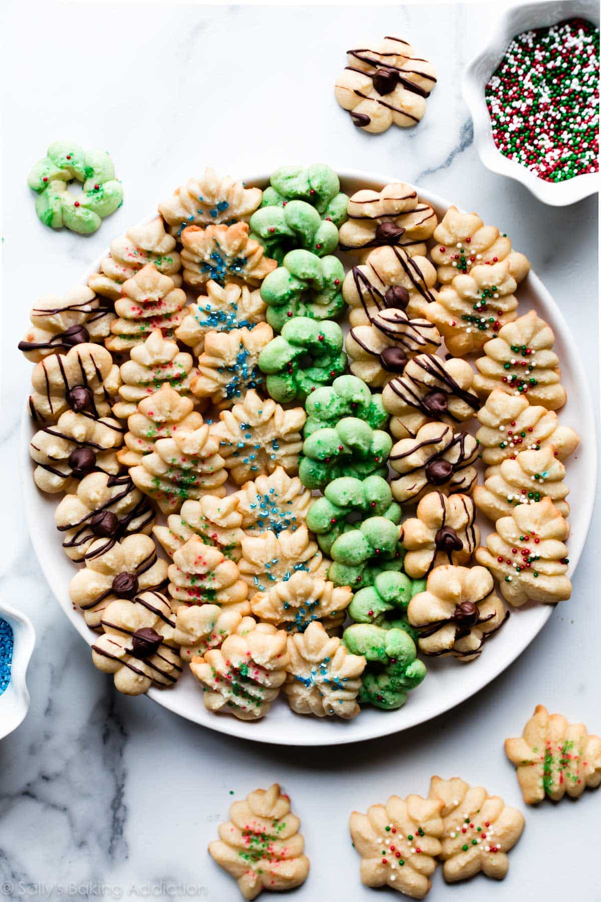

Spritz Cookies

Ingredients
- 1 cup (2 sticks) Unsalted Butter, at room temperature
- 3/4 cup Granulated Sugar
- 1 Large Egg, at room temperature
- 1 tsp. Vanilla Extract
- 1 tsp. Almond Extract
- 2 1/3 cups All Purpose Flour
- 1/2 tsp. Salt
Instructions
- Preheat oven to 350°F.
- In a large bowl, using a handheld mixer or a stand mixer fitted with a paddle attachment, beat the butter and granulated sugar together on medium-high speed until smooth, about 2 minutes. Add the egg, vanilla extract, and almond extract, and beat on high speed until combined, about 1 minute. Scrape down the sides and up the bottom of the bowl and beat again as needed to combine.
- On low speed, beat in the flour and salt. Turn up to high speed and beat until completely combined.
- Scrape some of the dough into your cookie press. Hold the cookie press perpendicular to the lined baking sheet and press out the cookies 2 inches (5 cm) apart. If desired, decorate the shaped cookie dough with sprinkles or press a chocolate chip into the center.
- If the cookie dough becomes too soft as you work, chill the shaped cookie dough in the refrigerator for 10 minutes before baking.
- Bake until very lightly browned on the edges, 7-9 minutes.
- Remove from the oven and allow to cool on the baking sheet for 5 minutes before transferring to a wire rack to cool completely. If desired, drizzle with melted chocolate.
- Cookies stay fresh in an airtight container at room temperature for up to 1 week.